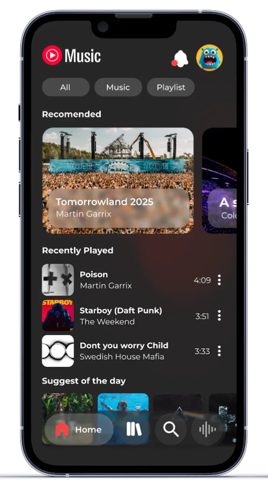
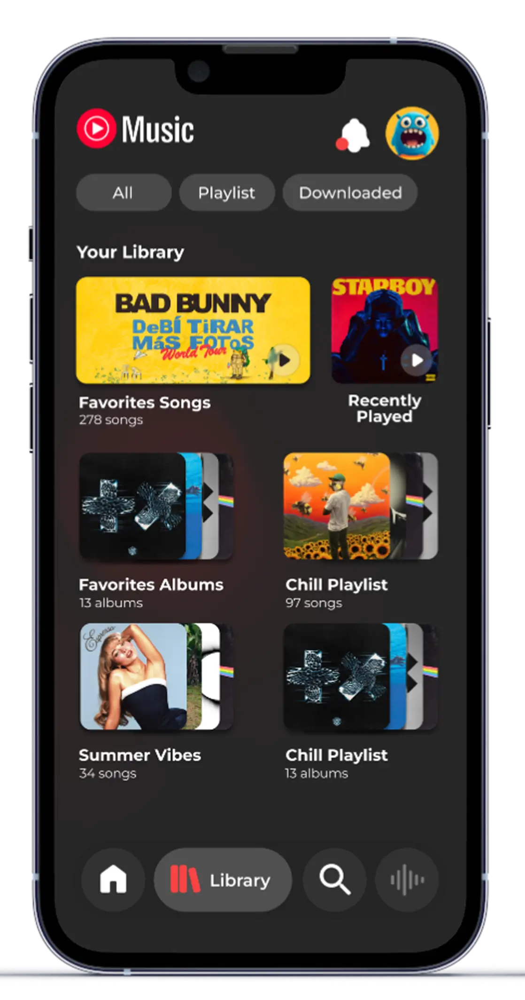
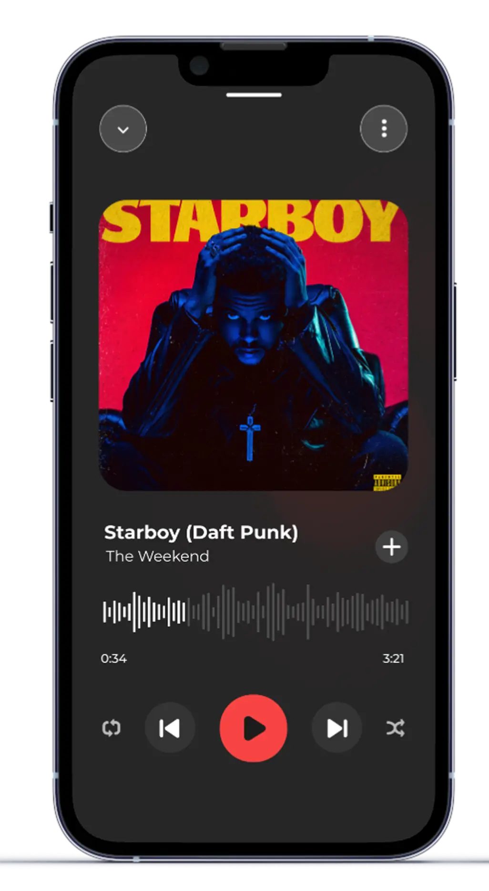
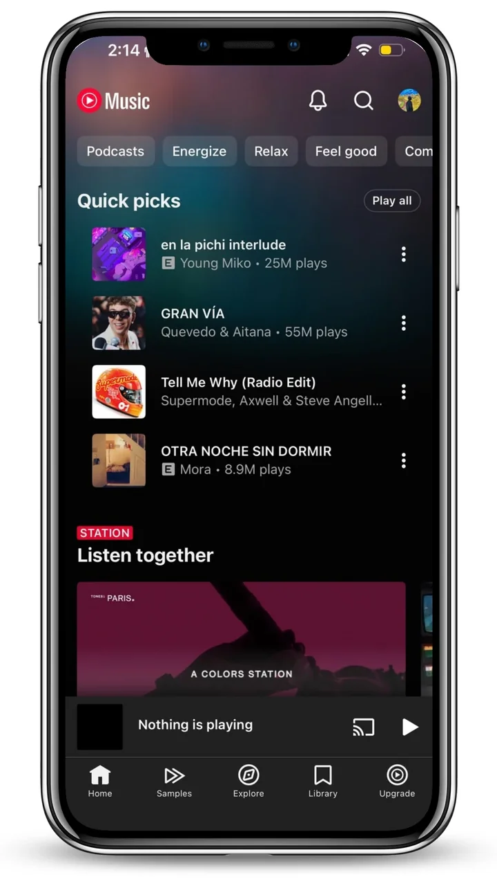
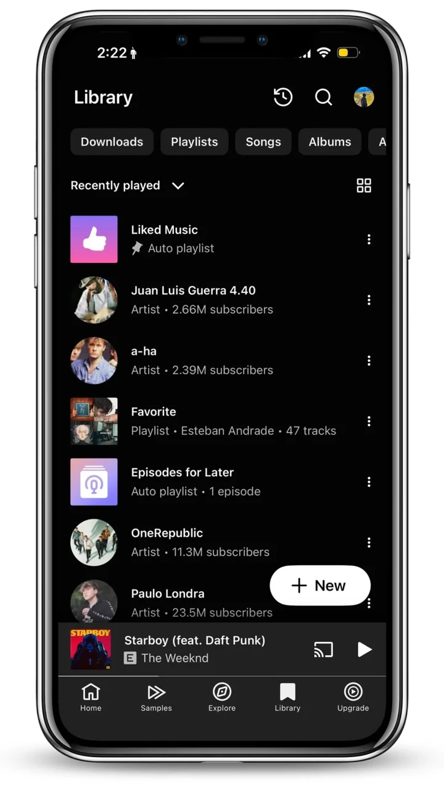
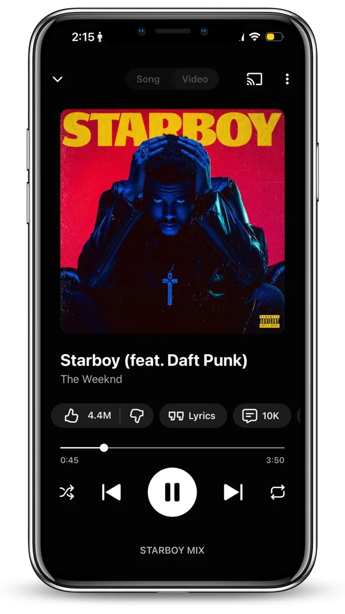

An admin dashboard with its own design system and a live demo you can try.
Three UX problems that make daily use frustrating, and three design decisions that fix them.



Why YouTube Music
YouTube Music has the biggest catalog of any streaming app, but the interface was unattractive, cluttered, and made it hard to enjoy even simple actions like finding or searching music. Users found the hierarchy confusing across both web and mobile. I redesigned it with a cleaner layout, clearer icons, and a modern color palette that feels simple, accessible, and visually engaging.
The original home dumped everything at once, no clear priority, no visual breathing room. The redesign introduces filter chips (All / Music / Playlist) so users immediately narrow scope, and restructures content into clear sections: Recommended first (large card), then Recently Played as a scannable list. The information hierarchy now matches how people actually use the app.

Cluttered, no visual hierarchyThe current library dumps everything together, music playlists, auto-mixes, music videos, and uploads in a single scrollable list. The redesign adds tab-based filtering at the top: Songs, Albums, Artists, Playlists, Videos. The user picks their mode and sees only what's relevant. Simple, obvious, fast.

All content types mixedThe current player uses most of the screen for album art and leaves the bottom empty. Queue, lyrics, and related tracks are hidden behind gestures users don't know exist. The redesign compacts the art slightly and surfaces an "Up Next" mini-queue and quick-action buttons (lyrics, share) directly on the screen, no hidden gestures required.

Empty space, hidden queueCustomer journey
Tap a stop on the path
A listener opens the app wanting something to play.
Touchpoints: Home
“What do I want to listen to?”
The interface is cluttered with no clear priority.
HMW give the home one clear entry point?
Filter chips on top and a clear recommended section.
She compares and searches but the hierarchy confuses her.
Touchpoints: Home, search
“Why is this so hard to scan?”
Too much on screen at once, no filters.
HMW make scanning effortless?
A cleaner layout, clearer icons and a modern, accessible palette.
She picks what to play from her own library.
Touchpoints: Library
“Where is my playlist in all of this?”
Songs, albums, playlists, videos and podcasts live in one flat list.
HMW let her filter by type in one tap?
Tab filters by content type at the top of Library.
She listens, and wants the controls and queue close.
Touchpoints: Now Playing
“Where are the lyrics and the queue?”
Album art takes 60% of the screen and queue and lyrics are buried.
HMW use the whole screen for what she needs?
A rebalanced player with queue, lyrics and related content within reach.
She shares what she found. A hypothesis to validate.
Touchpoints: Share sheet, word of mouth
“This feels so much better, look.”
A confusing app is rarely recommended.
HMW make sharing feel natural?
A consistent, clear system on every screen makes the app easier to love.
Pick a stop on the path. Each one opens what happens, what hurts and how the design responds.
Design synthesis from my own audit of the app. A personal concept, not user research. English only.
What changed
Takeaway
The most valuable thing this project reinforced: UX problems are rarely about missing features. YouTube Music has lyrics, has a queue, has discovery algorithms, but they're all buried. The redesign doesn't add anything new. It surfaces what's already there, in the moment users actually want it. That's the job.
An admin dashboard with its own design system and a live demo you can try.